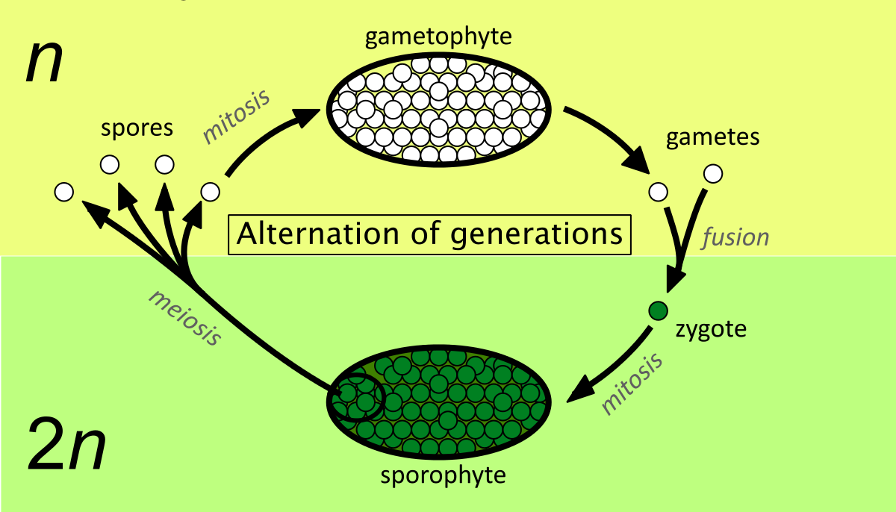

ORIGIN OF PLANTS
Plant is a multicellular eukaryote. That means it is made of cells that have nucleus and membrane bound organnelles. A billion years years ago, there were no plants on land.There were algae acting as plants on the water or seas. The algae soon adapted to form land plants instead of sea plants which gave rise to the first plants on the land. To prove this, the Modern green algae and the plants have the same cell walls that contains cellulose. Both groups use the same type of chlorophyll in photosynthesis and also store food in the form of starch. The plants have started on land around 440 Million years ago. They were simple plants that don't have leaves.
Adaptation in Plants
Land plants had to adapt to absorb water and nutrients. Few of the adaptatino techniques are-
1: The waxy cuticle creates a barrier which helps in the prevention of water from evaporating.
2: Development of seed was an adaptation technique for reproduction. The seed protects the embryo from drying out.
3: Development of roots to absorb water and nutrients from the soil.
4: Stem to provide suport for growth.
5: Vascular tissues helps in growing taller and transporting water and nutrients to each cell in the plant.
6: Leaf to prepare food for the plant through photosynthesis.
Alternations of generations in plants
The lives of all plants include two stages, or alternating generatinos. One generatinon is the
gametophyte generation and the other one is sporophyte generation. All the
cells of the gametophyte are haploid including the gamets. All cells of a sporophyte generation are
diploid. The spores produced in the sporophyte generation however are haploid.
Mitosis One cell divides and produces 2 genetically identical daughter cells.
Meiosis One cell divides and produces cell or cells with half the number of chromosomes.
Plant cells and tissues
A Tissue is a group of cells that function together to perform an activity. They are plant subsystems.
There are 4 types of plan tissues. 1: Ground Tissues, 2: Vasular Tissues, 3: Dermal Tissues and 4: Meristematic Tissues.
Ground Tissues
There are three types of Ground Tissues. They are :
1: Parenchyma- Sphere shaped cells with thin flexible walls found throughout the tissues of the plant. Main function are storage and food production.
2: Collenchyma- Are long cells with unevenly thickened cell walls. They are tube like strands or
cylinders and provide strngth and support for the surrounding tissue.
3: Sclerenchyma- Cells are thick and rigid. They provide support for the plant.

Vascular Tissue
Food, dissolved minerals and water are moved throught the plant by vascular tisse. Xylem and Phloem are the 2 types of vascular tissues.
1: Xylem- Tube like cells that transport water and dissolved minerals from the
roots to the rest of the plant.
2: Phloem- Long tube like cells that are arranged end to end that transport sugars and other carbon comounds. From leaves to other parts of the plant.
Dermal Tissue
There are 3 types of Dermal tissues. They are-
1: Epidermal Cells- Flattened cells that cover all the parts of the plant. They produce the waxy cuticle that helps prevent water loss
2: Stoma- Are openings in leaves tissue that controls the exange of gases. The opening and Closing of stoma controls the flow of water vapour from leaf tissues.
3: Trichomes- Hair like projections on stems and leaves that hlp reduce the evaporation of water from the plant and in few release poisonous substances that protects the plant from animals and insects.
Meristematic
There are different types of meristems.
1: Apical Meristems- Regions of actively dividing cells near the tips of roots and stems that allow roots and stems to increase in length.
2: Lateral Meristems- Cylinders of dividing cells located in roots and stems and allows to incrase in diameter. There are 2 types of lateral meristems. Vascular Cambium, that produces new Xylem and Phloem in the stems and roots and Cork Cambium, that produces cells with tough cell walls which forms the outer bark of a tree.Plant Organs
ROOTS
A root is a plant organ that helps in absorbing water and dissolved minerals and anchors the plant ot one position. There are 2 main types of root systems. They are-
1- Tap RootsThey are single thich structures with small branching roots. They accumulate and store food.
2- Fibrous Roots They have many small branching roots that grow from central point.
Other types of roots include prop roots, aerial roots and pneumetaphores.There are 2 areas cell growth in roots. The root apical meristem causes the root to increase in length. The additional cells in the vascular cambium adds to the root diameter. A protective layer of Parenchyma cells call the root cap covers the tip of each root. The apical meristem constantly produces replacement cells so that the root tip is always protected.
Stems
Stems are above the ground that supports leaves and flowers. They have vascular tissues (Xylem and Phloem) that move water, dissolved minerals and sugars to and from the roots and leaves. The movement of sugars in the phloem is called translocation.
Some stems such as corns, tubers and Rhizomes store food that helps the plant to survive drought or cold.The stem increases in length due to the production of cells by the Apical meristem at the tip of the stem. Meristems located along the stem, called nodes, are where leaves and branches develop.
The secondary growth adds thickness is the result of cell divisions in the vascular cambium of the stem. The secondary growth is called wood. The annual growth rings in tree trunks are the layers of vascular tissue produced each year by secondary growth.Leaves
The primary function of the leaves is photosynthesis. The primary parts of a leaf are
Leaf Blade- The flat broad green surface of a leaf is called the leaf blade.
Stalk- Joins the leaf blade to the stem and is also called Petiole
Veins- The Petiole contains vascular tissus that streches out from the stem into the leaf and forms VEINSStructure of a leaf
Epidermal CellsProduces waxy cuticle that prevents water loss.
Mesophyll is the photosynthetic tissue of a leaf and is of 2 types.
Palisade Mesophyll- Where most photosynthesis takes place as they recieve maximum exposure to sunlight and have many chloroplasts
Spongy Mesophyll- Surrounded by many air spaces that allow Carbon Dioxide and Water vapor to flow freely.
StomaThrough which gases move in and out of the leaf.Flower
The process of sexual reproduction in flowering plants takes place in a flower. The flower is a complex flower made up of 4 kinds of organs.
Petals- The colorful structures at the top of the flower stem. The flower stem is called the Peduncle
Sepals- Green leaf like structures that encircle the peduncle just below the petals.
Stamens- Inside the petals, are the stamens. It is the male reproductive organ of the flower. The ANTHER at the tip of the stamen produces pollen that contains sprem.
Pistil- The female reproductive organ of the flower. Thr bottom portion of the pistil is the Ovary The Ovary is a structure with one or more Ovules Each ovule contains one egg. The female gametophyte develops inside the Ovule.A flower that has all 4 organs is known as a complete flower. A flower that lacks 1 or more organs is called as a incomplete flower.
Photoperiodism and Critical Period
Photoperiodism is the response of flowering plants to daily daylight darkness conditions. This is a physiological adaptation all the plants of a particular species flower at the same time ensuring that there is a large population of pollinators to support pollination.
Critical Period
Each plant species has specific daylight darkness conditions that will make flowering start is known as the Critical Period. Plants can be classified into in one of the 4 categories depending on the critical period they require to produce the flowers.
Short-Day Plant Flowers- When the number of daylight hours is shorter than that of it's critical period. Ex- Strawberries, Poinsettias
Long-Day Plant Flowers- When the number of daylight hours is longer than that of it's critical period. They flower in summer. Example- Lettuce, Spinach, Potatoes and Wheat.
Day-Neutral Plants- They flower over a range in the number of daylight hours. Exmple- Roses, Cucumbers, Cotton and Dandelions
Intermediate-Day Plants- Will not flower if the days are longer or shorter than it's critical period. Example- Sugarcane and several grasses.
Nutritional and energy flow
1- Autotrophs these are the organisms that use light energy or energy stored in enegrgy compunds to make energy rich compunds. Exaples- Grass, trees and many other plants, uni-celled organisms such as green algae etc. These are also known as producers of food.
2- Heterotrophs are organisms that CANNOT make their own food and depend on other organisms for food and energy. Example- Most animals feed on autotrphs or they feed on other heterotrophs. They are also known as consumers.
3- Decomposers are organisms that break down the complex compunds of dead and decaying plants and animals. Examples- Bacteria, Fungi and Protozoans.
Types of ANIMALS
There are 4 types of animals. They are- Amphibians, Reptiles, Birds and Mammals.
Amphibians
Amphibia means double life. Animals that belong to the class amphibia that can change from aquatic to semi terrestrial during their live cycles. As larvae, all of the amphibians are aquatic which means they live in water. When omst amphibians reach adult stage, they breathe air. Amphibians can be foudn on land but they must live near water or other moist areas. These amphibians started or emerged around 360 million years ago. The first amphibians were Tetrapods which had 4 legs.
Ectotherms: is an animal that has variable or changing body temprature. Amphibians cannot trgulate their own body temprature or maintain their temprature at a stable level. During hot and cold times, many amphibians burrow into the mud and stay buried until the temprature changes.
Reptiles
Snakes, turtles, alligaters and lizards belong to the class Reptiles or Reptilla. Early reptiles called stem reptile, were the first animals that adapted to life on land. Unlike the amphibians, reptiles can complete all their life cycles on land. They don't require watery or moist environments.
Why does reptiles have scaly skins? Reptiles have a dry and thick skin. The skin is covered with scales. The scales are made of protein and are part of the skin it self. Scales prevent water loss of moisture from the body and provide protection from predators. Reptiles are too ectotherms as they depend on external heat to maintain their body tempratures within the range that they need for their bodies to function.Birds
There are more than 8600 species of birds in a class called Aves. The birds are 2 legged animals which have wings to fly all around. Scientists say that birds have evolved from small 2 legged dinasaurs called theropods. Birds have clawed toes and protein scales on their feet.
Feathers
Feathers are light weight modified protein scales. Feathers provide insulation and enable the bird to fly. Birds frequently run their bills or beaks through their feathers. This proccess is called Preening, this proccess keeps the bird's feathers in good conditions for flight.The 2 Breathing cycles of birds:
Birds need high levels of energy to fly. Several factos are involved in maintaining these high energy levels. Bird's 4 chambered heart beat quickly. The rapid hearbeat move the oxygenated blood quickly.
The birds have 2 breathing cycles. They are-
Cycle 1: When the bird breaths, oxygenated air passes through it's trachea and into the lungs. The trachea is located in the throat portion of the bird. Gas exange occurs in the lungs. Most of the inhaled air passes directly into the posterior air sacks which are located in the back of the bird.When the bird exales, the deoxygenated air goes into thte lungs from the posterior air sacs.
Cycle 2: The deoxygenated air in the lungs flows into the anterior air sacs. Then at the next exhalation, air flows from the anterior air sacs out of the trachea.Mammals
Mamals are endotherms which means they have the ability to maintain a faily constant body temprature. This enables mammals to live in almost every possible environment on Earth. Mammals have the characteristics not found in other animals. Mammals have hair, produce milk and many other such as 4 chambered hearts, specialized teeth, modified limbs and highly developed brains.
Respiration in mammals: The diaphagram of mammals helps expand the chest cavity to allow the flow of oxygen into the lungs. A diaphagram is the sheet of muscle located beneath the lungs that seperates the chest cavity frmo the abdominal cavity, where other organs are located. The air passes throught the nose through the trachea into the lungs. As soon as air passes the lungs enlarge to fit in more air as possible. The small veins in lungs filter out Oxygen and Carbon Dioxide from the air we breath and we exhale the Carbon Dioxide.
Food chains
Food chains display how matter and energy move through an ecosystem. In a typical food chain, we would have
one producer/autotrophs
few consumers/heterotrophs and a decomposer in a cycle. Most food chains are made up of 2, 3 or 4 transfers, where each step is known to be a feeding step / tropic level where transfer of energy & nutrition takes place.
Food Chain
Food web is a model that shows possible feeding relatinoship at each trophic level in a community. As most organisms depend on more than 1 type of organism for food. This is said to be an efficient model as compared to a food chain.
Ecological Pyramid
An ecological pyramid shows how the energy flows through an ecosystem. The pyramid of energy shows that the amount of avalible energy becomes less from 1 trophic level to the next. Each pyramid has autotrophs at the bottom and the higher trophic layers are layered one on top of the other. The total energy transfer from one tropic level to next is only about 10%. Some of the enerji is given as heat and the energy flow is uni-derectional.
--BULLET POINT-- Biomass is the total weight of living matter at each trophic level. A pyramid of biomass shows that total dry weight of living material at each trophic level. A pyramid of BIOMASS shows that total dry-weight of living material at each trophic level. There are 2 types of representing biomass pyramid.
1- Upright pyramid in a terrestrial ecosystem.
2- Inverted pyramid in an aquatic ecosystem.
Water Cycle
A typical water cycle consists of 4 stages. They are-
1- Evaporation : In evaporation water from lakes and oceans evaporate.
2- Condensation: Water in the form of water vapour condenses and forms clouds.
3- Sublimation : Water which is avalible in the cloud sublimes and forms ice.
4- Precepetation: During this process, the ice which is formed like a mountain melts and attains the first form which is water.
THIS CYCLE REPEATS!
In a water cycle, water moves in various forms between the atmosphere and the Earth.
CARBON CYCLE
Starts with autotrophs
While making food, Autotrophs use sun's energy to change carbon dioxide into energy rich carbon
Heterotrophs feed on autotrophs and use this carbon for their growth and energy
Both Autotrophs and heterotrophs use this carbon and release carbon dioxide into the air.
Nitrogen Cycle
Although 78% of air is nitrogen, plants cannot use this well.
Bacteria changes the nitrogen from air to a form plants can better use. This form is found in the soil.
Plants use this nitrogen to make proteins .
Animals eat the plants and change the plant proteins into animal proteins used in building muscle and blood cells.
Urine is an animal waste that lets animals get rid of nitrogen they do not need and this returns to soil. When organisms die and decay, nitrogen returns to soil.
Plants then re-use this nitrogen and this cycle iterates.
Phosphurus cycle
Phosphurus is an element that all organisms need. It cycles in 2 ways
1- In the SHORT TERM cycle, plants get phosphurs from soil.
Animals get phosphorous from eating plants
When these animals die, their decaying bodies release phosphorous back into soil and the cycle repeats.
In the long term cycle, materials containing phosphorous are washed into rivers and oceans
as millions of years pass, the phosphorous becomes locked in rocks millions of years later, the environment changes and some of the rock is no longer covered. as this rock wears away, the phosphorous is released back into the environment and the cycle repeats.